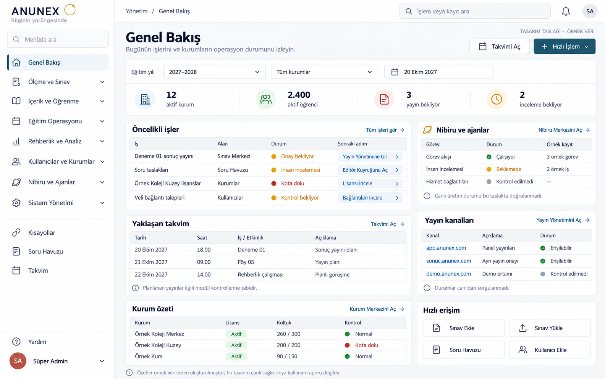
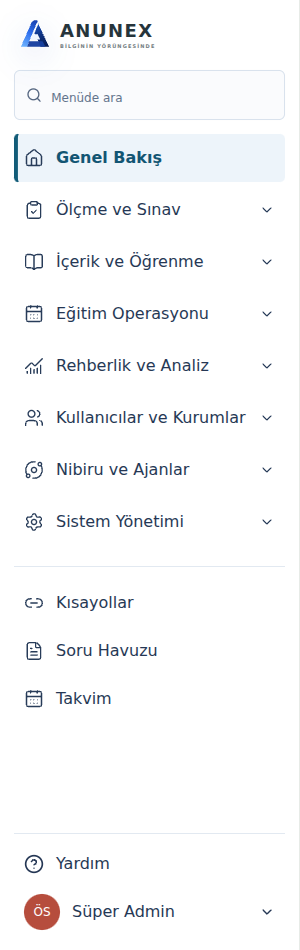

Sol: kullanıcının onayladığı görsel. Sağ: yerel React üretim çıktısı, sentetik Süper Admin hesabı. Bu karşılaştırma yalnız sol menüyü kapsar; ana gösterge paneli henüz bu görsele göre yeniden düzenlenmedi. Mevcut orijinal ANUNEX logosu korundu.

